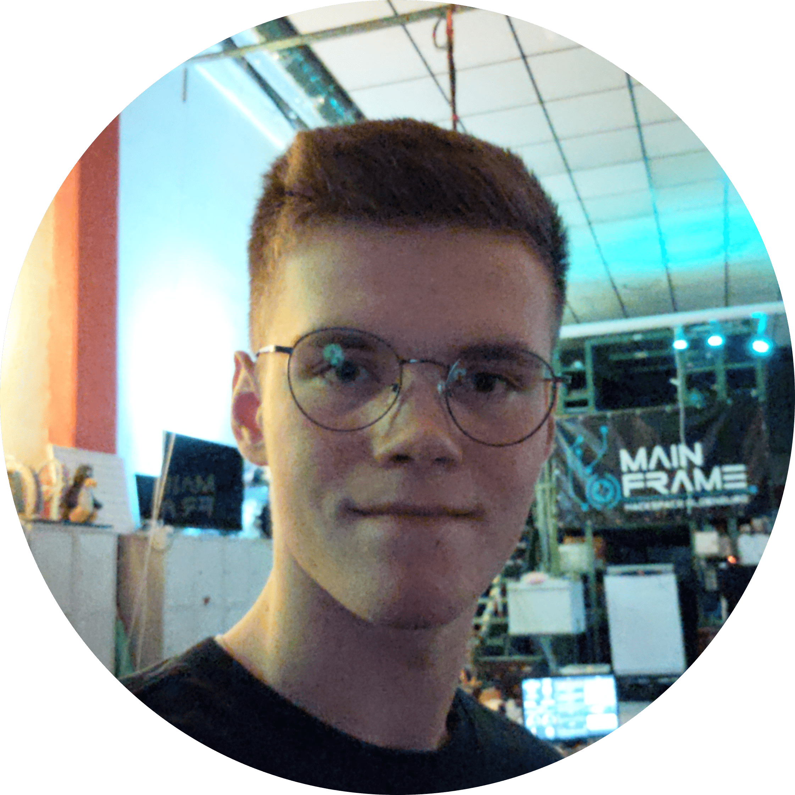

About me

My name is Luca Schultz, I'm the person behind the pseudonym locxter, live in Northern Germany and love to tinker and find new ways of doing stuff.
Nobody likes to read unnecessarily long self-descriptions about every aspect of a person, so here's a brief summary of my interests with additional information available for those, who care:
🖥️ Technology enthusiast
In my 9 years of programming and doing electronics projects I have slowly found love for writing simple and clean yet effective code, doing every part of a project I reasonably can on my own and using privacy respecting as well as FOSS software.
I am currently using Kotlin as my primary programming language, but have extensively worked with C++ in the past and also write some Java, Rust as well as JavaScript/TypeScript code from time to time. Other than that I prefer to use FreeCAD for designing parts, Inkscape for creating vector graphics, VSCodium as my text editor as well as C++/Rust/JavaScript/TypeScript IDE and IntelliJ IDEA as my Kotlin/Java IDE. My desktop operating system is heavily customized Linux Mint while I run CalyxOS on my phone.
🎯 Productivity nerd
One of the things that drives me the most is the desire to change something that I consider meaningful within my lifetime. One day I noticed that we don't have too little time in our lifes, but just don't use enough of it - which then introduced me to the productivity community.
Nowadays, I'm still very much in the process of leveling-up my productivity game, but consider this journey to be its own dedicated hobby of mine and an important aspect of who I am. That's also why this topic gets roughly the as much attention on my blog as technology - sometimes a little more, sometimes a little less.
📚 Book fanatic
Everyone needs a way to relax and for me that's mostly reading. On the one hand, some might call me a bookworm, but I think the amount of time I spend reading is absolutely reasonable and definitely better invested than watching TV or doomscrolling social media. On the other hand, many of my friends question my taste in books, since I mostly read generic sci-fi novels, thrillers or non-fictional works - not necessarily works of art - and prefer the often inferior German translations.
Some of my favourite books in particular order are:
- Cline, Ernest: Ready Player One
- Collins, Suzanne: Die Tribute von Panem - Tödliche Spiele
- Dick, Philip Kindred: Blade Runner - Träumen Androiden von elektrischen Schafen?
- Graßhoff, Marie: Neon Birds
- Huxley, Aldous: Schöne neue Welt - Ein Roman der Zukunft
- Orwell, George: 1984
- Roth, Veronica: Die Bestimmung
- Bregman, Rutger: Im Grunde gut - Eine neue Geschichte der Menschheit
- Clear, James: Die 1% Methode - Minimale Veränderung, maximale Wirkung
- Rosling, Hans: Factfulness - Wie wir lernen, die Welt so zu sehen, wie sie wirklich ist
- Snowden, Edward: Permanent Record - Meine Geschichte
🔊 Music lover
Since I don't drink coffee, tea or alcohol and would never even think about consuming other substances, my number one drug to lift the mood, exercise extra hard or get into a productive mindset is music . Due to these very different settings, the music I listen to also differs vastly.
When working, I stick to soundtracks of popular movies like Inception or Interstellar . When excerising I exclusively listen to Kontra K and for everything else I'm fine with anything electronic as well as bass-heavy - preferrably along the lines of Scooter, Harris & Ford and Hardwell.
🚴+🏃 Freetime cyclist and runner
To balance out all the time I spend indoors and in front of the computer, I love to go cycling and running in my free time. I'm certainly nowhere the performance of a professional athlete, but with sports in general the goal is not to become better than others, but better than yourself .
If you are interested in what I'm currently doing, take a look at my "Now" page .